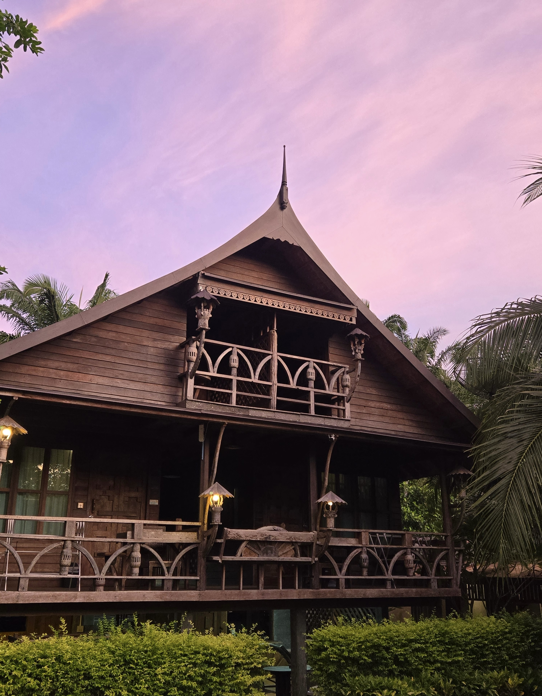
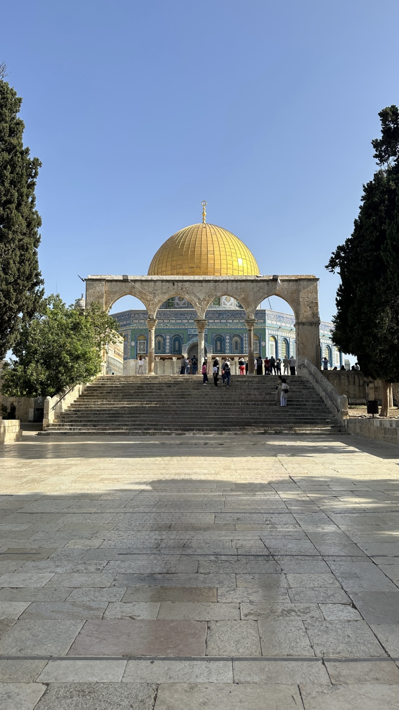
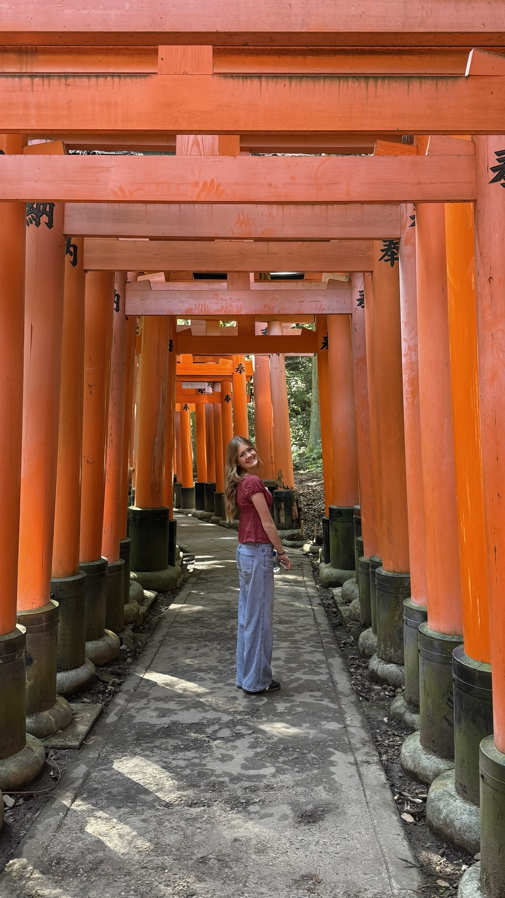

I have been lucky enough to visit 28 countries so far. Here are some of my all-time favorites and why I love them.
See My Top DestinationsGrowing up, my family made travel a priority. We were always exploring new places, and that shaped who I am today. There is something about experiencing a new culture, trying new food, and seeing the world from a completely different perspective that I will never get tired of.
Below are my top destinations ranked, along with some pictures, a video, and even a fun quiz you can take to find your perfect travel match!

Beautiful sightseeing and incredible culture.

Ancient history around every corner.

The perfect mix of tradition and modern.
This cinematic video of Japan captures what it feels like to travel there. It is one of my favorite countries I have visited.
This interactive Tableau visualization shows international tourism trends around the world.
Not sure where to go next? Take this quick quiz to find your perfect destination.
Take the Quiz